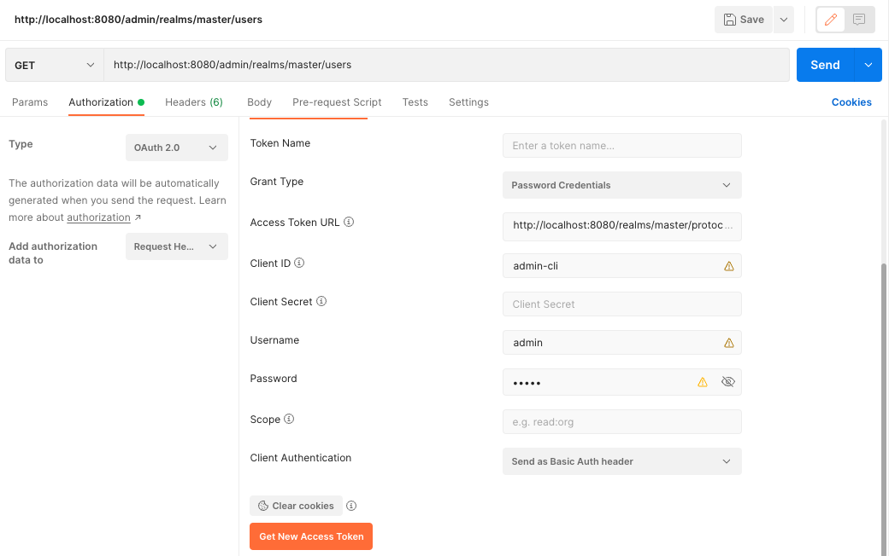

Ako pristupovať k administrátorskému REST API v Keycloaku? Ako sa voči nemu autorizovať, a ako je možné napríklad vytvárať používateľov inak než cez administrátorskú konzolu?
Administrátorské REST API Keycloaku
Keycloak má k dispozícii administrátorské REST API, ktorým možno pristupovať k jednotlivým entitám pomocou programátorských nástrojov.
|
REST API je dostupné na URL s predponou http://localhost:8080/admin/ Dokumentácia entít a volaní je k dispozícii na portáli Keycloaku |
Autorizácia
REST API je implementované ako štandardný OAuth Resource Server ochránený bežnými flowmi OAuthu.
Ak sme si istí, že k REST API pristupujeme z uzavretého klienta, ktorému vieme zdôveriť login a heslo, môžeme použiť na autorizáciu flow ROPC.
###
POST http://localhost:8080/realms/master/protocol/openid-connect/token
Content-Type: application/x-www-form-urlencoded
client_id=admin-cli&username=admin&password=admin&grant_type=password (1)
> {%
client.global.set("jwt", response.body.access_token) (2)
%}
###| 1 | Identifikátor klienta OAuth je admin-cli.
Posielame login ( Keďže používame flow ROPC, typ grantu je |
| 2 | Výsledok z odpovede typu JSON vyberá atribút access_token, ktorý obsahuje token JWT s autorizačnými údajmi. |
Konfigurácia pre Postman-a je analogická.

Volanie API
Volanie API využíva klasické priloženie tokenu JWT do hlavičky Authorization ku hodnote Bearer.
Vytváranie používateľa
Používateľa vytvoríme podľa dokumentácie: stačí vhodne pripraviť JSON do požiadavky a odhaliť adresu URL.
Ukážka pre klienta v HTTP IntelliJ IDEA:
### Create user
POST http://localhost:8080/admin/realms/master/users/
Authorization: Bearer {{jwt}}
Content-Type: application/json
{ (1)
"username": "janedoe",
"enabled": true,
"credentials": [
{ (2)
"type": "password",
"value": "eolooRup7pahngief5Fe",
"temporary": false
}
]
}
> {%
client.global.set("newUserUrl", response.headers.valueOf("Location")) (3)
%}| 1 | Vytvárame používateľské konto, čo je entita typu UserRepresentation. |
| 2 | Pripravíme mu aj heslo eolooRup7pahngief5Fe, ktoré nie je dočasné, aby sa ním používateľ mohol okamžite prihlásiť. |
| 3 | Odpoveďou bude stavový kód 201 (Created) a hlavička Location s identifikátorom nového používateľského konta v podobe URL, napríklad http://localhost:8080/admin/realms/master/users/212aa1c7-667e-4c2b-a99b-4c050ea94644 |
Informácie o používateľovi
Informácie o používateľovi vieme získať z príslušnej URL, ak máme identifikátor používateľa vo formáte UUID.
Napríklad:
http://localhost:8080/admin/realms/master/users/212aa1c7-667e-4c2b-a99b-4c050ea94644
Odpoveďou je JSON:
{
"id":"212aa1c7-667e-4c2b-a99b-4c050ea94644",
"createdTimestamp":1680364471327,
"username":"janedoe",
"enabled":true,
"totp":false,
"emailVerified":false,
"disableableCredentialTypes":[],
"requiredActions":[],
"notBefore":0,
"access":{
"manageGroupMembership":true,
"view":true,
"mapRoles":true,
"impersonate":true,
"manage":true
}
}REST API
Celý skript pre HTTP klienta pre IntelliJ IDEA.
keycloak-admin.http
Unresolved directive in <stdin> - include::keycloak-admin.http[]